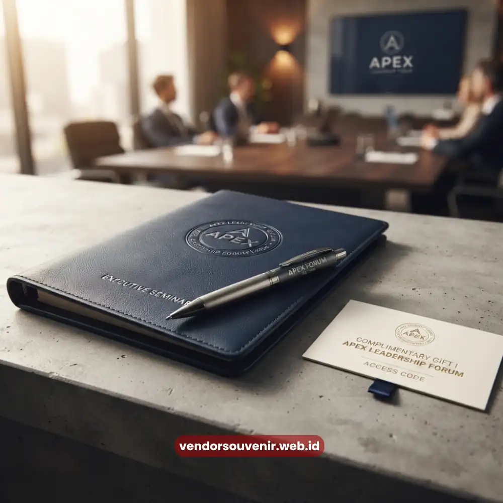

Daftar Isi
Souvenir seminar custom branding adalah cendera mata yang dirancang dengan sentuhan identitas visual perusahaan, mulai dari logo, warna korporat, hingga tagline acara, sehingga berfungsi ganda sebagai hadiah sekaligus media promosi.
Bagi perusahaan atau instansi yang rutin mengadakan seminar dan pelatihan, souvenir bukan hanya formalitas, melainkan kesempatan memperkuat pengenalan brand di mata peserta yang bisa jadi merupakan mitra bisnis, klien, atau calon talenta potensial.
Setiap kali souvenir tersebut digunakan di ruang kerja, identitas perusahaan ikut hadir bersamanya.
- Souvenir dengan sentuhan branding memperkuat pengenalan visual perusahaan di luar ruang seminar.
- Konsistensi warna, logo, dan tipografi pada souvenir mencerminkan profesionalisme penyelenggara.
- Souvenir branding yang tepat dapat menjadi alat promosi berkelanjutan tanpa biaya iklan tambahan.
- Pemilihan produk harus mempertimbangkan area cetak logo agar hasil personalisasi tetap rapi.
Mengapa Branding pada Souvenir Seminar Penting bagi Citra Perusahaan
Setiap interaksi peserta dengan produk berlogo perusahaan berkontribusi pada apa yang dikenal sebagai efek paparan berulang, yaitu semakin sering seseorang melihat sebuah identitas visual, semakin kuat pula ingatannya terhadap brand tersebut.
Riset perilaku konsumen dari beberapa lembaga pemasaran pada periode 2023 mencatat bahwa merchandise fungsional yang digunakan secara rutin memiliki tingkat retensi brand yang jauh lebih tinggi dibandingkan iklan digital sekali tayang.
Souvenir seminar, dengan sifatnya yang dipakai berulang di lingkungan kerja, menjadi salah satu media branding paling efisien dari sisi biaya jangka panjang.
Selain memperkuat pengenalan visual, souvenir branding juga membangun persepsi kredibilitas.
Perusahaan yang konsisten menghadirkan souvenir berkualitas dengan desain rapi cenderung dianggap lebih profesional dan mapan dibandingkan yang menggunakan souvenir generik tanpa sentuhan identitas apa pun.
Elemen Desain yang Wajib Ada pada Souvenir Branding
Bagaimana cara memastikan souvenir mencerminkan identitas perusahaan secara maksimal?
Elemen paling mendasar adalah konsistensi warna korporat pada seluruh item souvenir, penempatan logo yang proporsional dan mudah terlihat, serta pemilihan tipografi yang selaras dengan panduan brand perusahaan.
Selain itu, penambahan tagline singkat atau nama acara dapat memperkuat konteks sekaligus memberi kesan bahwa souvenir tersebut memang dirancang khusus, bukan produk massal yang sekadar ditempeli stiker logo.
Kualitas cetak juga menentukan keberhasilan branding.
Logo yang pudar, warna yang tidak akurat, atau posisi cetak yang kurang presisi justru dapat menurunkan kesan profesional yang ingin dibangun, sehingga pemilihan metode cetak dan bahan produk perlu disesuaikan dengan karakteristik masing-masing souvenir.
Jenis Produk yang Paling Efektif untuk Branding Perusahaan
Tidak semua souvenir memiliki area cetak yang cukup luas untuk menampilkan identitas brand secara optimal.
Produk dengan permukaan datar dan luas seperti tumbler, totebag, dan notebook cenderung lebih efektif menampilkan logo dan elemen visual lain dibandingkan produk berukuran kecil.
Di sisi lain, produk fungsional seperti powerbank atau flashdisk tetap efektif meski area cetaknya terbatas, karena frekuensi penggunaannya yang tinggi dalam aktivitas kerja sehari-hari.
Untuk seminar dengan target audiens eksekutif atau tamu VIP, souvenir dengan kemasan eksklusif turut memperkuat kesan branding secara keseluruhan, karena kemasan menjadi elemen pertama yang dilihat sebelum produk di dalamnya.

Kesan Profesional melalui Souvenir Eksklusif
Bagaimana Menjaga Konsistensi Branding di Berbagai Jenis Acara
Konsistensi branding tidak berarti menggunakan desain yang persis sama di setiap acara, melainkan menjaga elemen inti seperti logo, palet warna, dan gaya visual tetap dikenali meskipun tema souvenir berbeda-beda.
Pendekatan ini penting terutama bagi perusahaan yang rutin menyelenggarakan seminar dengan tema berbeda setiap periode, agar peserta tetap dapat mengasosiasikan souvenir tersebut dengan perusahaan yang sama.
Menyusun panduan branding sederhana untuk tim penyelenggara acara dapat membantu proses ini berjalan lebih efisien, sehingga setiap kali ada kebutuhan souvenir baru, tim tidak perlu memulai konsep dari nol.

Tingkatkan Citra Perusahaan Anda dengan Souvenir Branding yang Tepat
Tim ahli kami siap membantu Anda menyusun paket seminar eksklusif yang sesuai identitas visual korporat.
Seluruh souvenir akan dikerjakan dengan standar kualitas percetakan premium dan hasil presisi.
Dapatkan penawaran harga terbaik untuk pemesanan massal!
FAQ Seputar Souvenir Seminar Custom Branding
Apa itu souvenir seminar custom branding?
Souvenir seminar custom branding adalah cendera mata yang didesain dengan elemen identitas visual perusahaan seperti logo, warna, dan tagline untuk memperkuat pengenalan brand.
Produk apa yang paling cocok untuk branding perusahaan?
Produk dengan area cetak luas seperti tumbler, totebag, dan notebook umumnya paling efektif menampilkan identitas brand secara jelas.
Apakah souvenir branding lebih mahal dari souvenir biasa?
Tidak selalu, karena biaya branding umumnya hanya menambah proses personalisasi cetak, bukan mengubah harga dasar produk secara signifikan.
Souvenir seminar dengan sentuhan branding yang tepat mampu menjadi investasi jangka panjang bagi citra perusahaan Anda.
Maroon Souvenir
Partner Corporate Gift terpercaya di Indonesia. Berpengalaman melayani ratusan perusahaan sejak 2018.
Lihat Portofolio Kami